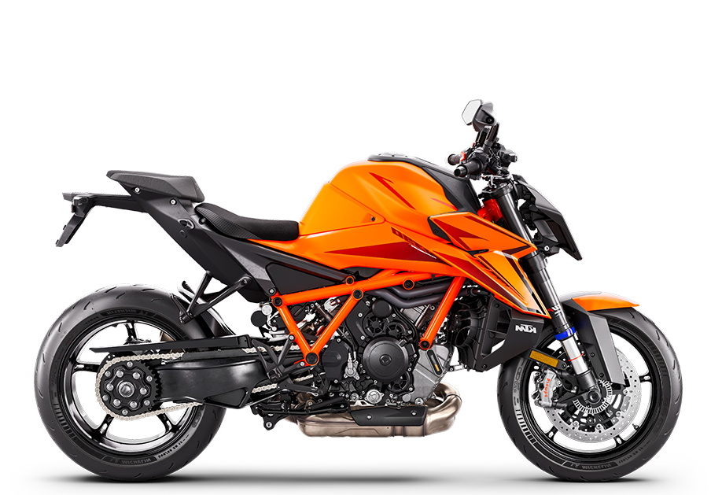
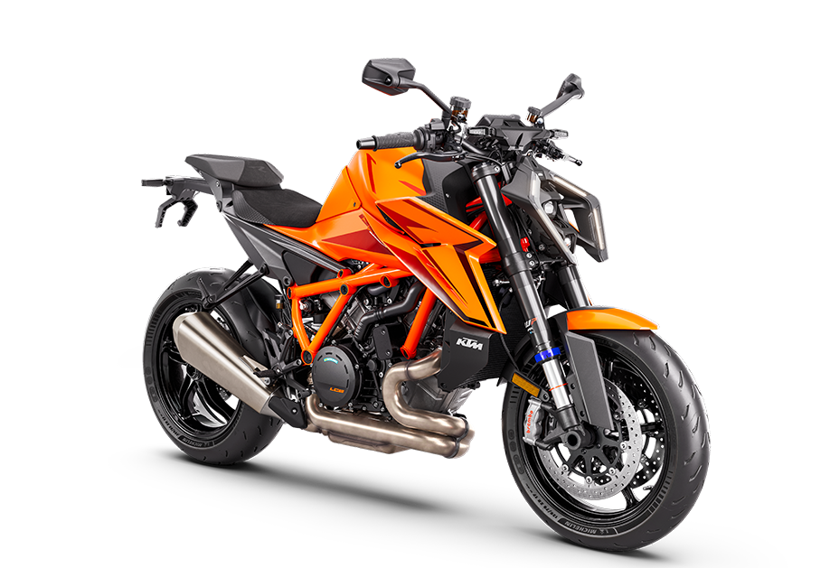
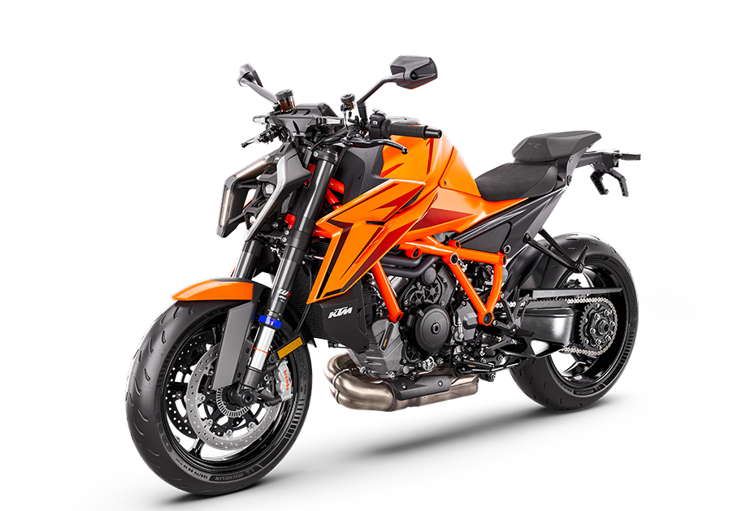

KTM 1390 Super Duke R EVO
- Kategorija: Naked
- Brend: KTM
- Kvačilo: PASC™ slipper clutch, hydraulic
- Menjač: 6-stepeni
- Težina: 200 kg
- Visina od tla: 149 mm
- Visina sedišta: 834 mm
- Zadnji disk: 240 mm
- Rezervoar: 17.5 l
O modelu: KTM 1390 Super Duke R EVO
KTM 1390 Super Duke R EVO nije samo motocikl – to je "Zver" koja pomera granice onoga što naked mašina može da postigne. Sa masivnim agregatom od 1350 kubika koji isporučuje neverovatnih 140 kW snage, ovaj model dominira svakim pravcem i zavojem na asfaltu.
Opremljen najnaprednijom elektronskom suspenzijom i vrhunskim komponentama, EVO verzija nudi prilagodljivost koja se menja u realnom vremenu prema stilu vožnje. Njegov agresivan, ogoljen dizajn ne ostavlja mesta sumnji u njegove namere – ovo je vrhunski ulični borac za vozače koji zahtevaju čistu snagu, preciznost i beskompromisne performanse.